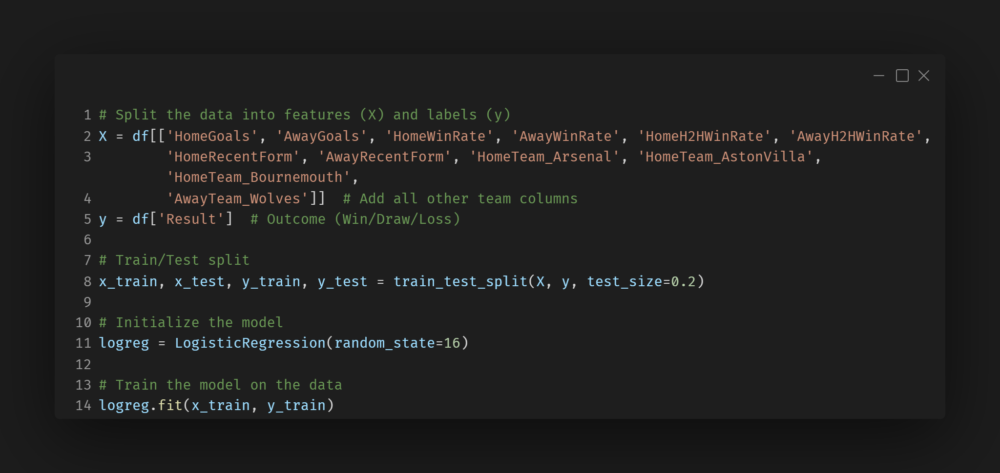
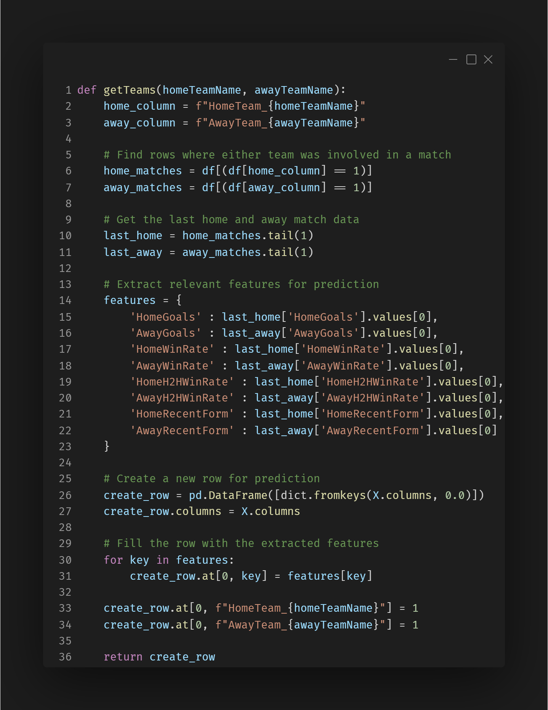
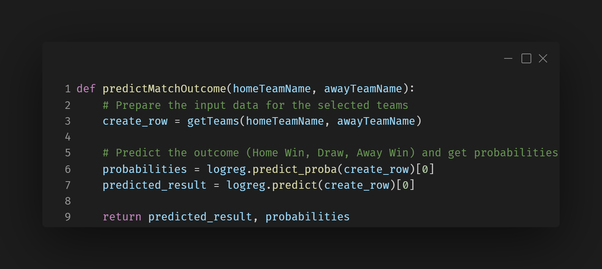

Description
This feature uses a trained machine learning model to predict the outcome of a Premier League football match based on the selected home and away teams. The result can be a Home Win, Draw, or Away Win, providing users with an AI-generated insight into potential match results. Implementation
When the user selects two different teams from the dropdowns and clicks the "Predict" button, the application sends these inputs to a logistic regression model. This model returns both a predicted result and a probability distribution over all three outcomes. The result is displayed as a label in the GUI, and the associated probabilities are shown below it. Design Approach
A clean and focused GUI using Tkinter enables simple team selection and clear display of the prediction result. The model logic is separated from the interface, allowing easy upgrades or retraining of the AI without altering the frontend. The design prioritizes usability and fast access to results.Click for details
×
-
Training the Logistic Regression Model

This snippet demonstrates how the logistic regression model is trained using historical match data. The model learns from features such as goals scored, win rates, and team form, which will later be used for predicting match outcomes.
Preparing the Input for Match Prediction

This snippet demonstrates how the most recent data for the selected home and away teams is extracted and used to create a new row. This row will be passed to the model for prediction.
Making the Match Prediction

Once the data is prepared for the selected teams, this snippet shows how the model is used to predict the outcome of the match. The prediction and its associated probabilities are returned, which provide insight into the likelihood of each outcome (Home Win, Draw, Away Win).
Challenges
Handling Team Data Association
Challange:
One of the significant challenges I faced during the development of the AI Match Prediction feature was properly associating the teams playing in each match. Initially, the model struggled to differentiate between home and away teams, which made the predictions inaccurate or impossible. The dataset lacked clear distinctions for the teams playing in the matches, leading to errors in the prediction process.
Solution:
To address the issue of team data association, I restructured the dataset to clearly indicate which teams were playing at home and which were playing away. For each match, I created separate columns for both Home Team and Away Team for all teams in the league. I assigned a value of 1 to the respective columns for the teams involved in the match and 0 for the others. This allowed the model to correctly differentiate between the two teams and capture relevant features for prediction.